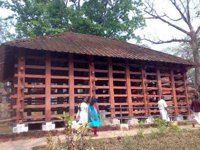

A natural waterfall with captivating surroundings is situated on the banks of the River Pamba. The fall is 60 to 100 ft deep which pours down on a rocky bed. The place is a favourite picnic spot among locals as well as tourists.

This place is considered to be the equivalent to an elephant's cage. The reason being is that the main attraction of the region is a massive wooden cage where elephant are trained.

If you are looking forward to explore the fascinating culture of Kerala, you are at right place. Kaviyoor Rock Temple is the only cave temple left in the state which glorifies the culture of the area more that its spiritual aspect.